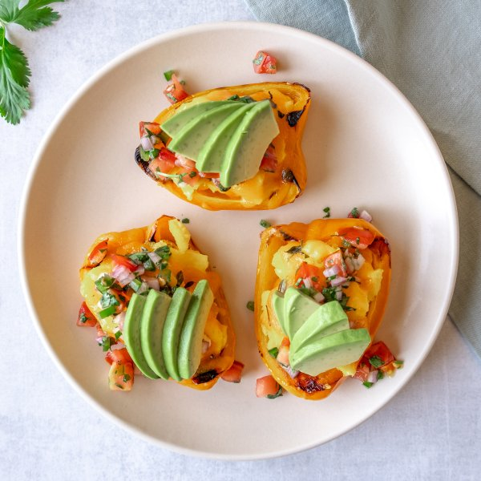

Cheesy Scrambled Egg Stuffed Peppers with Avocado & Pico de Gallo

Nutrition (per serving)
430.2 kcalCalories
21.4 gProtein
18.4 gCarbs
31.7 gFat
Full nutrition table
| Calories | 430.2 kcal |
| Total fat | 31.7 g |
| Saturated fat | 13.1 g |
| Trans fat | 0.6 g |
| Cholesterol | 371.8 mg |
| Sodium | 328.2 mg |
| Carbohydrates | 18.4 g |
| Fiber | 6.2 g |
| Sugars | 9.6 g |
| Protein | 21.4 g |
| Potassium | 935.7 mg |
| Calcium | 286.3 mg |
| Iron | 3.1 mg |
| Vitamin A | 1718.2 IU |
| Vitamin C | 245.2 mg |
| Vitamin D | 83.3 IU |
Cookware
Ingredients
- 1avocado
- ½ (8 oz) blockcheddar cheese
- 1 small bunchcilantro
- 8eggs
- 1jalapeño pepper
- 1lime
- 4orange bell peppers
- 1shallot
- 2tomatoes
- black pepper
- butter, unsalted
- oregano, dried
- salt
Steps
- Preheat oven to broil and position rack in the center of the oven.
- Wash and dry the fresh produce.4 orange bell peppers
1 lime
1 small bunch cilantro
2 tomatoes
1 jalapeño pepper
1 avocado - Cut the bell peppers lengthwise into thirds; remove and discard the stem, seeds, and white membrane. Transfer bell pepper pieces, skin-side down, onto a baking sheet.
- Broil the peppers for 6-8 minutes, flipping them over with tongs halfway through cooking.
- Meanwhile, juice the lime into a medium bowl.
- Shave the cilantro leaves off the stems; discard the stems. Mince the leaves and add to the lime juice.
- Peel and mince the shallot; small dice the tomatoes. Add both to the bowl.1 shallot
- Quarter the jalapeño pepper lengthwise; seed and remove ribs of the jalapeño with a spoon. Finely dice and add to the pico de gallo. Season with salt and stir to combine; set aside.½ tsp salt
- Crack the eggs into a medium bowl and season with salt and pepper; whisk together.8 eggs
⅛ tsp salt
⅛ tsp black pepper - Preheat a nonstick skillet over medium heat. Add butter to the skillet and swirl to coat the bottom.2 tbsp butter, unsalted
- Pour the egg mixture into the skillet. Scramble the eggs using a combination of stirring and flipping, making sure to bring in all the mixture from the edges of the pan. Cook until the eggs are no longer runny.
- While the eggs are cooking, grate the cheese.½ (8 oz) block cheddar cheese
- Reposition the bell pepper pieces, skin-side down, on the baking sheet. Divide the scrambled eggs among the bell pepper pieces and top with cheddar cheese and oregano. Place bell peppers under the broiler for 1 minute, or until the cheese has melted.½ tsp oregano
- Halve the avocado and remove pit. Thinly slice the flesh while still in the skin and then scoop out the slices using a spoon.
- To serve, divide the bell peppers between dishes; top with pico de gallo and sliced avocado. Enjoy!